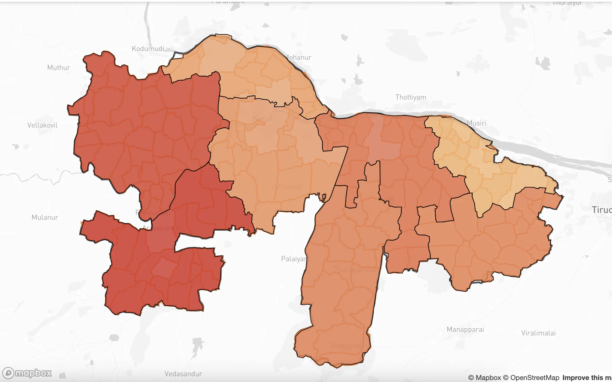
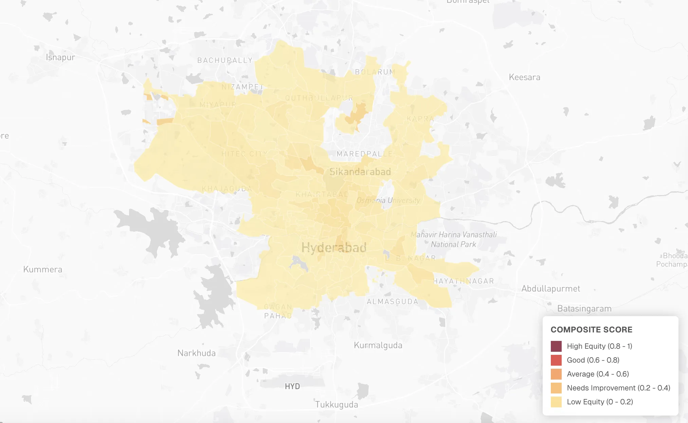
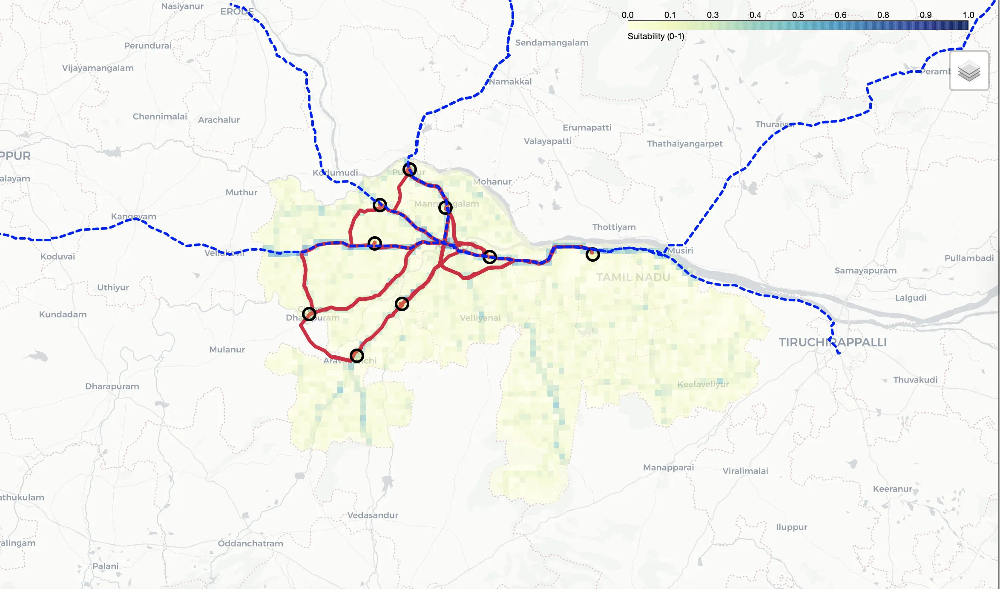
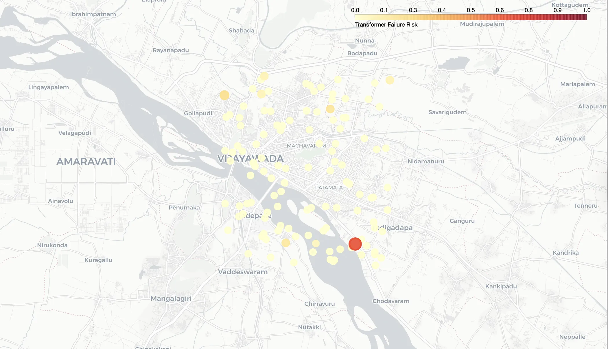

About Us
BuildSoc (Building Smarter Societies) is a Policy and Urban Tech Studio that bridges governance, planning, and data. We work at the intersection of urban policy, spatial technology, and digital governance — enabling cities to become smarter, more inclusive, and evidence-driven.
Founded by young urban planners and technologists, BuildSoc rethinks how cities are shaped — not just through plans, but through data, design, and decision systems.
Our Mission
To create data-driven, technology-enabled urban systems that make cities more equitable, sustainable, and responsive.
Our Vision
To be India’s most forward-thinking Urban Policy & Technology Think Tank, transforming research and data into real change for cities and citizens.
Founded by Bharat Oraon and Manish Yalala — urban planners driven by innovation, governance, and data.
Flagship Projects

Karur Regional Insights Dashboard
An interactive web dashboard visualizing key regional data for Karur district, featuring a built-in analysis of block-level service accessibility.

Urban Equity Analysis Hyderabad
A web-based platform that identifies, analyzes, and illustrates spatial equity patterns across diverse urban localities in hyderabad.

GeoAI-Powered Urban Logistics
Geospatial AI to optimize urban freight routes, enhance last-mile delivery efficiency, and create sustainable logistics solutions for smart cities.

Equicity.tech: Urban Grid Resilience
An Platform that models power grid vulnerabilities and optimizes the location of critical infrastructure to enhance resilience.
Let’s Collaborate
Have a project, policy idea, or data challenge? Let’s make it real.